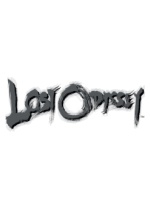

Lost Odyssey is the story of Kaim, an immortal character who has lived more than 1,000 years and doesn't remember his past and doesn't know where his future lies. Throughout Kaim's journey, a handful of characters will join him on an odyssey to discover their intricate past and destiny, leading players through a dramatic story of massive scale
-
DetailsPublisher : Microsoft Game Studios
Developer : Mistwalker and feelplus Inc.
Release Date : Winter 2007
Price: £39.99
- Screenshots

- Features
-
Storyline - With story sequences penned by award-winning Japanese novelist Kiyoshi Shigematsu in cooperation with producer Hironobu Sakaguchi, Lost Odyssey sets a new benchmark for the RPG genre with a combination of true-to-life cinematics and the story of an immortal man who has been suffering in many ways for 1,000 years. Players will witness Kaim's life as he lives through many generations, becomes part of numerous families, falls in and out of love, and confronts all of the conflicts that arise. Kaim's struggles are set in a world that is on the verge of a mystical industrial revolution, where mankind has attained dark powers.
RPG - Lost Odyssey blends massively multiplayer online role-playing game (MMORPG) elements into the game's traditional RPG system, enabling players to make strategic decisions for a more immersive and deep gameplay experience.
Graphics - Powered by Unreal Engine 3 technology, Lost Odyssey boasts stunning visual fidelity and rendering quality. The Unreal Engine 3 technology pushes high-definition visual designs to a higher level and brings out the smallest details in the largest battles. Gamers will experience a rich dynamic world with an unprecedented level of detail. Users can experience the true-to-life gameplay and facial expressions of emotionally distressed characters in the world of Lost Odyssey.
Environment - The massively scoped worlds, memorable characters and epic story line of Lost Odyssey play out like an intense and unsettling blockbuster action film. Heading up the artistic demands of the title is famed Japanese comic artist Takehiko Inoue; renowned composer Nobuo Uematsu has been recruited to create a contemporary soundtrack.

{kind=link}
{kind=link}
{kind=link}